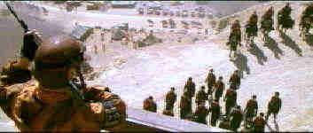

Postman, The/B-,A
Warner/1997/177m/ANA,WS2.35/PS 1.33
Big budget movies often have the cinema snipers ready with their sharp quips before production begins. When it's a big budget movie with Kevin Costner involved, the snipers seem to grow to marshmallow man proportions. And, hell, let's face, when the movie is named The Postman, the filmmakers are leaving themselves open to a lot of cheap jokes. That said, while The Postman may be overlong(or in some instances too abbreviated in fact), it's an ambitious and often entertaining movie. The Naysayers have gleefully dubbed it Waterworld on land. That's far from the truth, though both films deal with apocalyptic visions, and Waterworld was a damn good action movie, The Postman never generates the excitement or energy of Waterworld. But it is a very different vision.
Kevin Costner plays a wandering loner who scrapes out an existence scavenging and making small entertainments for pockets of civilization sometime in a future after a devastating war. The setting is somewhere in the great Northwest, now mostly a desert landscape. When Costner arrives in need of food at a settlement, he puts on a good-natured Shakespearean show, with his mule as a foil, for the young and old alike. Costner's fate changes forever when a Army troop arrives at the settlement looking for a specified contribution of food. When the stores fall short, General Bethlehem demands additional manpower for his renegade force and Costner is caught sneaking out.
By the time Costner becomes branded into the "army of the eight," and makes a daring escape, a chance shelter in an old mail truck brings him an entree into another settlement with an old mail sack and postman's uniform. It doesn't take long for a group of young people to latch on to Costner as a hope for some future and a new postal service begins, a sign of an organized government and a return to order. Beauregard find the new order of postmen a threat to his rule and wages war on them. You can make an educated guess on who wins. Hey, you know the credo of the U.S. Postal Service.
Costner is effective if somewhat bland as The Postman. Will Patton plays the heavy, General Bethlehem one-dimensionally. Olivia Williams, a British actress, is very attractive and respectable as the love interest. Larenz Tate adds some innocent and enthusiastic support, but the writing often leaves the actors in the lurch. Check out Costner's daughter as one of The Postman's disciples. The role doesn't ask for too much and she has a friendly screen presence.
 |
Bethlehem's Army camp.©Warner |
The DVD is a beauty, with clean background details. Color is an accurate representation of the original theatrical production. Difficult landscape shots are transferred very well. The 5:1 soundtrack is in good balance. The additional short subject on the special effects used in The Postman is very well done, illustrating how scenes look with and without the effect work.